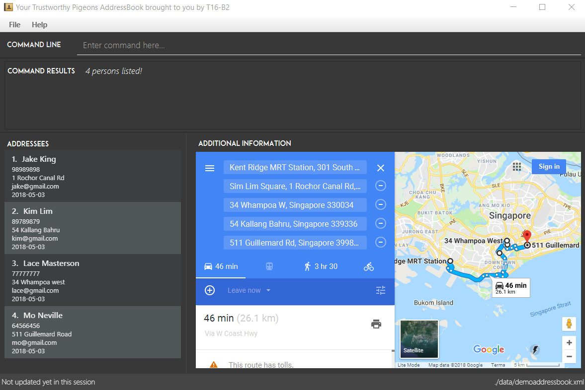

Overview
Pigeons is a desktop level application created for delivery companies to better assign and organize deliveries for the delivery people.
Summary of contributions
-
Major enhancement: added the ability to log in to a customised profile and address book instance
-
What it does: allows the user to log in to a customised profile, with each user profile linked to its own customised address book instance and user preferences
-
Justification: This feature improves the product significantly because it provides the option for users to use different profiles (many users can continue to share one profile if preferred). It is more conceivable that different users would have different addressees to send deliveries to and hence having a customised list of addressees would help each user have a better overview of their addressees and perform their deliveries more effectively.
-
Highlights: This enhancement introduces a whole new component that initiates even before the start of the main application, denying access to existing addressee lists to users who do not possess valid login details. It also has GUI components which accept keyboard inputs in a user-friendly manner ("Tab" & "Enter") in line with the CLI focus of the main application.
-
Credits: AddressBook-Level4 project created by SE-EDU initiative at https://github.com/se-edu/
-
-
Minor enhancement: Enhanced user interface for application overall by adding useful labels in the main application and instructions to the login screen.
-
Code contributed: [Functional code] [Test code]
-
Other contributions:
-
Documentation:
-
Community:
-
Contributions to the User Guide
Given below are sections I contributed to the User Guide. They showcase my ability to write documentation targeting end-users. |
Introduction
Pigeons is a delivery-tracking tool for both business-owners and delivery drivers who prefer to use a desktop app for managing their delivery process. Pigeons is optimized for those who prefer to work with a Command Line Interface (CLI) while still having the benefits of a Graphical User Interface (GUI). If you can type fast, Pigeons can get your delivery management tasks done faster than traditional GUI apps.
The recommended way to use Pigeons is to first load in the delivery data by a centralised administrator for each delivery driver, and then allow each driver to login to their own account and filter by today’s date to retrieve the route for the deliveries they have for the day.
Quick Start
-
Run the MainApp scripts / jar file and await for the GUI to open
-
A login screen such as the one below should appear.
-
Create a profile with desired username and password if using for the first time. If profile has previously already been created, or after creation of profile, click login.
You can use Tabto switch to the next field/button andEnterto submit/create/exit.Enterwill not work on the username field but only on the password field and buttons.The application should open into the following screen:

Centralised loading in of data [coming in v2.0]
Users may be able to load in large amounts of addressees into their Pigeons addressbook files from v2.0 onwards.
The section below on user testing is co-authored with meerakanani |
User Testing
When testing and using our system for the first time, here are some commands you can try to get the full experience. Feel free to try other commands outlined above when you get the feel of our program as well.
1. add n/John Doa a/321 Clementi Ave p/67340028 e/pigeonscs2103@gmail.com d/2018-03-24
2. filter 2018-03-24
3. find John
4. delete 1
Contributions to the Developer Guide
Given below are sections I contributed to the Developer Guide. They showcase my ability to write technical documentation and the technical depth of my contributions to the project. |
Architecture
A fifth component, the Login component, is omitted in the above diagram to reduce the complexity of the diagram. This component is also run by the MainApp class as further explained below, but will only be run at app launch and subsequently will have limited interaction with the other components, leaving the general architecture of the main application as depicted in the diagram above.
|
UI component
The login component has its own independently running user interface, but the classes used for the login feature are maintained together with those of the main application in the UI component package.
|
Storage component
-
can save the
UserPassdata in json format and read it back.
Login component
The Login component,
-
allows for users to login to a specific instance of the Pigeons address book, such that each user (Pigeon/Delivery Driver) can have a personalised list of customers to deliver to.
-
provides an interface for managing the entire login process with usernames and passwords in a paired structure
UserPassstored in a json file in the implemented classJsonUserPassStoragewhich implementsUserPassStorage. -
UserPassconsists of two Strings, the first being the username and the second being the password. The password is automatically hashed by the SHA-256 algorithm uponUserPasscreation. A statichashmethod is provided in theUserPassclass if SHA-256 hashing is required for any password verification.
Login feature
Current Implementation
The login feature is facilitated by a UserPassStorage that stores all UserPass (username and password pair of Strings) created before in the application.
Each time a user attempts a login, a UserPass is created based on their inputs for username and password, and verified against the UserPassStorage.
Upon successful verification, the user will be brought to a user-customised version of the application.
The following sequence diagram shows how the checkLoginDetails method works:
Instructions for Manual Testing
Launch and Shutdown
-
Login settings
-
Create an account for the same username more than once (not case-sensitive).
Expected: Creation of a profile for the same username as one that exists already should not be allowed. -
Try a different password than the one used for creating the account (not case-sensitive).
Expected: It should deny you entry into the application until the correct password is keyed in.
-